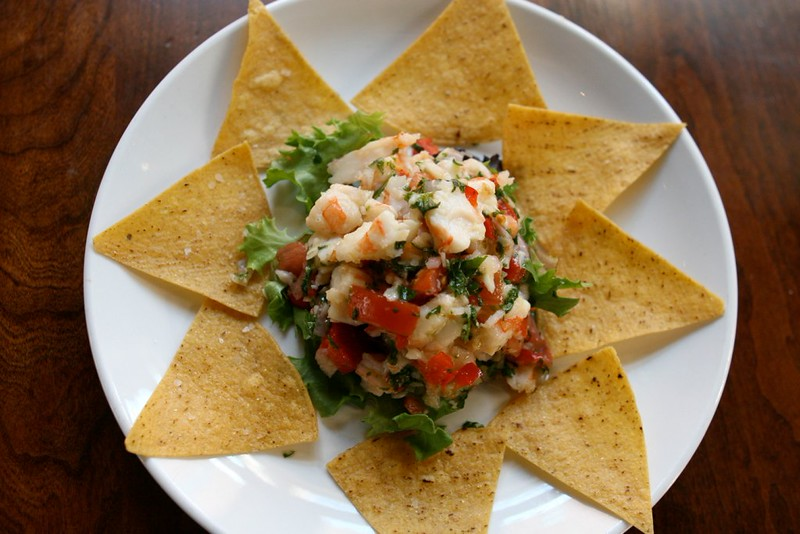

Shrimp Ceviche
A refreshing and zesty dish made with fresh shrimp and citrus juices!

"Shrimp Ceviche" - CC BY-SA 2.0
“IMG_3256” by Susan Lucas Hoffman, CC BY-SA 2.0
License Link: https://creativecommons.org/licenses/by-sa/2.0/deed.en
Description
This vibrant and flavorful ceviche is a perfect summer dish, combining fresh shrimp with a tangy citrus marinade.
Back to Homepage
Ingredients
- 1 lb fresh shrimp, peeled and deveined
- 1 cup fresh lime juice
- 1 cup fresh lemon juice
- 1 small red onion, finely chopped
- 2 jalapeño peppers, finely chopped (remove seeds for less heat)
- 1 cup fresh cilantro, chopped
- 2 cloves garlic, minced
- 1 tsp cumin powder
- Salt and pepper to taste
Steps
- Cut the shrimp into bite-sized pieces.
- In a large bowl, combine the lime juice, lemon juice, red onion, jalapeño peppers, cilantro, and garlic.
- Add the shrimp to the bowl and toss to coat evenly.
- Let the mixture marinate in the refrigerator for at least 30 minutes or up to 2 hours.
- Season with cumin powder, salt, and pepper to taste.
- Serve chilled with tortilla chips or on its own.